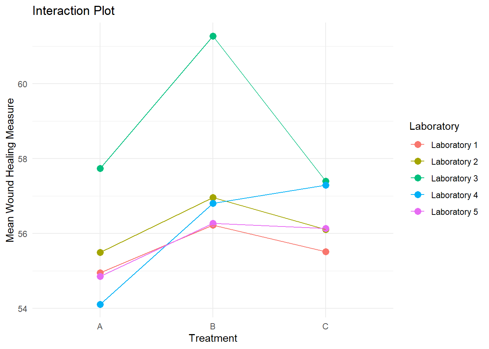

# Set seed for reproducibility
set.seed(123)
# Define blocks (laboratories) and treatments
blocks <- factor(paste0("Laboratory ", rep(1:5, each = 6))) # Labs 1 to 5, now with 6 observations per lab
treatments <- factor(rep(c("A", "B", "C"), each = 2, times = 5)) # Replication within blocks
# Simulate block effects and treatment effects
block_effect <- rnorm(5, mean = 0, sd = 2) # Random effect for each block
treatment_effect <- c(A = 5, B = 7, C = 6) # Fixed effects for treatments
# Simulate interaction terms (Treatment by Laboratory)
interaction_effect <- matrix(rnorm(15, mean = 0, sd = 1), nrow = 5, ncol = 3)
# Create data frame
data_rep_block <- data.frame(
Laboratory = blocks,
Treatment = treatments,
WoundHealing = NA
)
# Assign responses with interaction terms
for (i in 1:nrow(data_rep_block)) {
b <- as.numeric(data_rep_block$Laboratory[i])
t <- data_rep_block$Treatment[i]
t_index <- match(t, c("A", "B", "C"))
data_rep_block$WoundHealing[i] <-
50 + block_effect[b] + treatment_effect[t] + interaction_effect[b, t_index] + rnorm(1, mean = 0, sd = 1)
}Beyond Linear Regression Lab 4: Replicated Randomized Block Designs
In the previous lab, we considered a traditional randomized block design without replication, where each treatment was applied once within each block (laboratory). This design allowed us to control for variability between laboratories and efficiently estimate the main effects of the treatments. However, a key limitation of this approach is that it does not allow us to assess whether the treatment effects vary across blocks, a concept known as interaction.
The lack of replication in the traditional design means we can only test for main effects of the treatments and laboratories, but not whether the effectiveness of a treatment depends on the specific laboratory conditions. For example, a treatment might work well in one laboratory but not in another due to environmental differences (e.g., humidity or temperature), indicating a treatment-by-laboratory interaction.
An interaction occurs when the effect of one factor (e.g., treatment) is not consistent across levels of another factor (e.g., laboratory). In other words, the effect of a treatment might vary depending on the laboratory conditions. Replicating the treatments within each block allows us to estimate these interaction effects and better understand the variability in treatment outcomes across different settings.
In this lab, we introduce replication within blocks, allowing us to estimate the variability within treatment-block combinations and assess whether treatment effects are consistent across blocks.
Example: Testing Wound Healing Treatments with Replication and Treatment-by-Block Interactions
To allow for replication and potential interaction between treatments and laboratories, we update the simulation code from the previous lab and run it to create an updated dataset:
The R code chunk above simulates wound healing observations (measured on a continuous scale, where higher values indicate better healing) for 30 cell culture plates, divided across five laboratory facilities. Each treatment (A, B, and C) is applied to two cell culture plates within each laboratory, introducing replication. The results are stored in the data frame data_rep_block, which consists of the following three variables:
Laboratory: A factor variable indicating the laboratory facility.Treatmment: A factor variable indicating the applied treatment.WoundHealing: A numeric variable representing the degree of wound healing on a continuous scale.
Exploratory Data Analysis
To explore the data and investigate the presence of a potential interaction between treatments and laboratories, we create an interaction plot. An interaction plot is a graphical tool that helps visualize whether the effect of one factor (in this case, treatment) depends on the levels of another factor (in this case, laboratory). Specifically, it shows how the mean response (wound healing) for each treatment varies across different laboratories. If the lines on the interaction plot are parallel, this suggests there is no interaction, meaning the treatment effect is consistent across laboratories. If the lines are not parallel, this indicates a potential interaction, meaning the effect of treatment differs depending on the laboratory.
# Calculate mean Wound Healing for each Treatment-Labortory combination
library(dplyr)
mean_data <- data_rep_block %>%
group_by(Laboratory, Treatment) %>%
summarise(Mean_WoundHealing = mean(WoundHealing))
# Display the produced summary table with the group means
mean_data# A tibble: 15 × 3
# Groups: Laboratory [5]
Laboratory Treatment Mean_WoundHealing
<fct> <fct> <dbl>
1 Laboratory 1 A 55.0
2 Laboratory 1 B 56.2
3 Laboratory 1 C 55.5
4 Laboratory 2 A 55.5
5 Laboratory 2 B 57.0
6 Laboratory 2 C 56.1
7 Laboratory 3 A 57.7
8 Laboratory 3 B 61.3
9 Laboratory 3 C 57.4
10 Laboratory 4 A 54.1
11 Laboratory 4 B 56.8
12 Laboratory 4 C 57.3
13 Laboratory 5 A 54.9
14 Laboratory 5 B 56.3
15 Laboratory 5 C 56.1# Create an interaction plot
library(ggplot2)
ggplot(mean_data, aes(x = Treatment, y = Mean_WoundHealing, group = Laboratory, color = Laboratory)) +
geom_point(size = 3) +
geom_line() +
labs(title = "Interaction Plot",
y = "Mean Wound Healing Measure",
x = "Treatment") +
theme_minimal()
A Mixed Effects Model for the Randomized Block Design
Similar to the previous lab, laboratory is included as a random effect and treatment as a fixed effect in the model. The key new feature is the treatment-by-laboratory interaction term, which is also modeled as a random effect.
To understand why the interaction term must also be modeled as random, we need to consider the nature of random effects in this context. Since laboratory is treated as a random effect, we are assuming that the laboratories in the experiment represent a random sample from a larger population of possible laboratory conditions. This means that we are not just interested in the specific laboratories in the study, but in how the treatments would perform across any set of laboratories with varying conditions.
When we include an interaction term between treatment and laboratory, we are asking whether the effect of each treatment depends on the laboratory environment. If we had modeled laboratory as a fixed effect (i.e., we were only interested in those specific laboratories), the interaction could also be treated as fixed. However, because laboratory is random, the interaction must also be treated as random to reflect the idea that the variability in treatment effects across laboratories applies not just to the specific laboratories in the study, but to any laboratory from the broader population.
In other words, by modeling the interaction as random, we are assuming that the variation in treatment effects is not unique to the five laboratories in the study, but rather represents random fluctuations in treatment effectiveness that could occur in any laboratory setting. This approach allows us to generalize our findings beyond the laboratories in the experiment, making the model more realistic and applicable to a wider range of scenarios.
Model Specification
The mixed-effects model for the replicated randomized block design is specified as:
\[ Y_{ijk} = \mu + \tau_i + b_j + (tb)_{ij} + \epsilon_{ijk} \]
where:
- \(Y_{ijk}\): Response (wound healing) for the \(k\)-tjh replicate of Treatment \(i\) in Laboratory \(j\).
- \(\mu\): Overall mean response
- \(\tau_{i}\): Fixed effect of Treatment \(i\).
- \(b_{j}\):Random effect of Laboratory \(j\), assumed to follow a normal distribution with mean zero and variance \(\sigma^2_{b}\).
- \((tb)_{ij}\): Random interaction effect between treatment \(i\) and Laboratory \(j\), assumed to follow a normal distribution with mean zero and variance \(\sigma^2_{tb}\).
- \(\epsilon_{ijk}\): Random error term, assumed to follow a normal distribution with mean zero and variance \(\sigma^2\).
Model Estimation
Similar as in the previous lab, we fit the mixed effects model using the lmer() function from the lmeTest package:
library(lmerTest)
options(contrasts = c("contr.sum", "contr.poly")) # Effects coding
model_block <- lmer(WoundHealing ~ Treatment + (1 | Laboratory) + (1 | Treatment:Laboratory), data = data_rep_block)
summary(model_block)Linear mixed model fit by REML. t-tests use Satterthwaite's method [
lmerModLmerTest]
Formula:
WoundHealing ~ Treatment + (1 | Laboratory) + (1 | Treatment:Laboratory)
Data: data_rep_block
REML criterion at convergence: 98.7
Scaled residuals:
Min 1Q Median 3Q Max
-1.4134 -0.4515 -0.1989 0.4962 2.3865
Random effects:
Groups Name Variance Std.Dev.
Treatment:Laboratory (Intercept) 0.4747 0.6890
Laboratory (Intercept) 1.4462 1.2026
Residual 0.9089 0.9533
Number of obs: 30, groups: Treatment:Laboratory, 15; Laboratory, 5
Fixed effects:
Estimate Std. Error df t value Pr(>|t|)
(Intercept) 56.4744 0.5926 4.0000 95.297 7.27e-08 ***
Treatment1 -1.0438 0.3520 8.0000 -2.966 0.0180 *
Treatment2 1.0306 0.3520 8.0000 2.928 0.0191 *
---
Signif. codes: 0 '***' 0.001 '**' 0.01 '*' 0.05 '.' 0.1 ' ' 1
Correlation of Fixed Effects:
(Intr) Trtmn1
Treatment1 0.000
Treatment2 0.000 -0.500Syntax overview
Let’s break down the model formula WoundHealing ~ Treatment + (1 | Laboratory) + (1 | Treatment:Laboratory):
WoundHealing ~ Treatment: This specifies thatWoundHealingis the outcome variable and thatTreatmentis included as a fixed effect to estimate differences between the three treatments.(1 | Laboratory): This specifies the random effect forlaboratory, representing laboratory-specific deviations from the overall mean.(1 | Treatment:Laboratory): This specifies the random interaction term betweenTreatmentandLaboratory.
Summary overview
When we run summary(model_random), the following output is displayed:
- Fixed Effects
- The intercept represents the overall mean wound healing measure across all treatments and laboratories, which is estimated as 56.47.
- The coefficient for Treatment1 (-1.04) indicates that the mean wound healing for Treatment A is 1.04 units lower than the overall mean.
- The coefficient for Treatment2 (1.03) shows that the mean wound healing for Treatment B is 1.03 units higher than the overall mean.
- Treatment C is not directly shown in the output because, with effects coding, the sum of the treatment coefficients must equal zero. Treatment C can be inferred as having a mean very close to the overall mean (around 0.01 units below it).
- Variance components
- The random effect for Laboratory has a variance of 1.4462, indicating considerable variability in baseline wound healing levels across different laboratories.
- The random effect for the Treatment-by-Laboratory Interaction has a variance of 0.4747, showing that the treatment effects vary across laboratories. This means the effectiveness of treatments is not entirely consistent across laboratories, though the variability in this interaction is smaller compared to the variability between laboratory baselines and may not be statistically significant (more about that later).
- The residual variance is 0.9089, which represents the unexplained variability within each treatment-laboratory combination.
Assessing the variance components
In our model, the treatment-by-laboratory interaction is modeled as a random effect. To determine whether this variance component is necessary, we perform a likelihood ratio test to compare the full model (i.e., the previously fitted model with both the random laboratory effect and the random treatment-by-laboratory interaction effect) to a reduced model that includes only the random laboratory effect:
# Fit the full model with the random interaction term
full_model <- lmer(WoundHealing ~ Treatment + (1 | Laboratory) + (1 | Treatment:Laboratory),
data = data_rep_block)
# Fit the reduced model without the random interaction term
reduced_model <- lmer(WoundHealing ~ Treatment + (1 | Laboratory),
data = data_rep_block)
# Perform the likelihood ratio test
anova(full_model, reduced_model, refit=FALSE)Data: data_rep_block
Models:
reduced_model: WoundHealing ~ Treatment + (1 | Laboratory)
full_model: WoundHealing ~ Treatment + (1 | Laboratory) + (1 | Treatment:Laboratory)
npar AIC BIC logLik deviance Chisq Df Pr(>Chisq)
reduced_model 5 110.08 117.08 -50.038 100.08
full_model 6 110.67 119.08 -49.335 98.67 1.4068 1 0.2356When given two or more arguments representing fitted models, the anova() function from the lmerTest package produces likelihood ratio tests to compare these models. By default, these models are refitted using maximum likelihood (ML) estimation, which is suitable for testing fixed effects but not ideal for testing random effects. Random effects are better assessed using restricted maximum likelihood (REML).
To keep the REML estimation intact for testing random effects, we use the refit=FALSE argument in the anova() function. This ensures that the models are compared without being refitted using ML.
The output provides the likelihood ratio test statistic and p-value, indicating whether the random interaction term significantly improves the model fit.
Maximum Likelihood (ML) versus Restricted Maximum Likelihood (REML) estimation
Maximum Likelihood (ML): This method estimates all model parameters simultaneously, including both fixed and random effects. It provides unbiased estimates for fixed effects but can lead to biased estimates of the variance components.
Restricted Maximum Likelihood (REML): REML focuses on estimating variance components while accounting for the loss of degrees of freedom associated with fixed effects. This method provides more accurate estimates of random effects.
Estimates of the fixed effects parameters are generally comparable between ML and REML. However, variance component estimates will typically be larger with REML given that the method was developed to overcome the downward bias of the maximum likelihood estimates of variance components. For this reason, REML is the default estimation approach when fitting mixed effects models with the lmer() function. However, there are also situations where REML cannot be used, particularly during the model-building phase when comparing models with different fixed effects structures. In these cases, the models need to be refitted using ML.
Assessing the fixed effects
The fixed effects can be assessed using an approach similar to that used in the previous lab. This includes testing for the overall significance of the treatment effect and, if significant, exploring the differences between specific treatment groups through estimated marginal means and pairwise comparisons.
However, before performing these tests, we need to determine which model to use: the full model with the random interaction term or the reduced model without it. This choice is based on the results of the likelihood ratio test performed earlier. If the likelihood ratio test indicates that the random interaction term is necessary, we will use the full model for testing the fixed effects. Conversely, if the likelihood ratio test suggests that the random interaction term is unnecessary, we will use the simpler model without it. This aligns with the general scientific principle of preferring more parsimonious models that adequately explain the data while minimizing complexity.
Model diagnostics
The process of performing model diagnostics for the replicated randomized block design is the same as for the traditional randomized block design. Therefore, we refer to the previous lab for detailed instructions on assessing model assumptions and performing diagnostic checks.